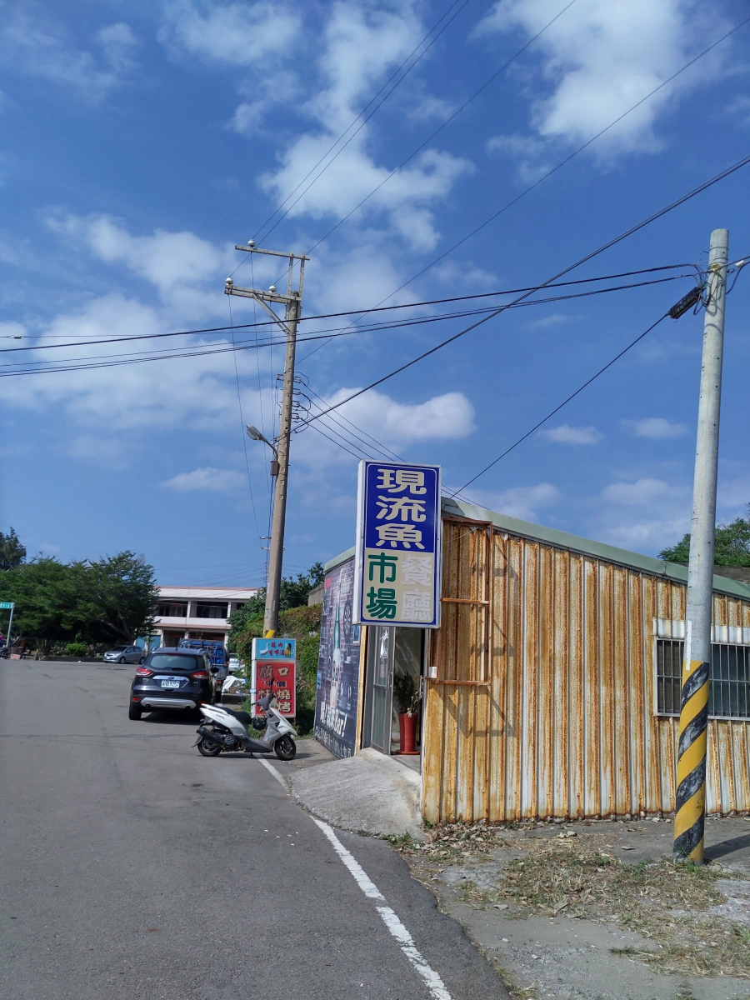
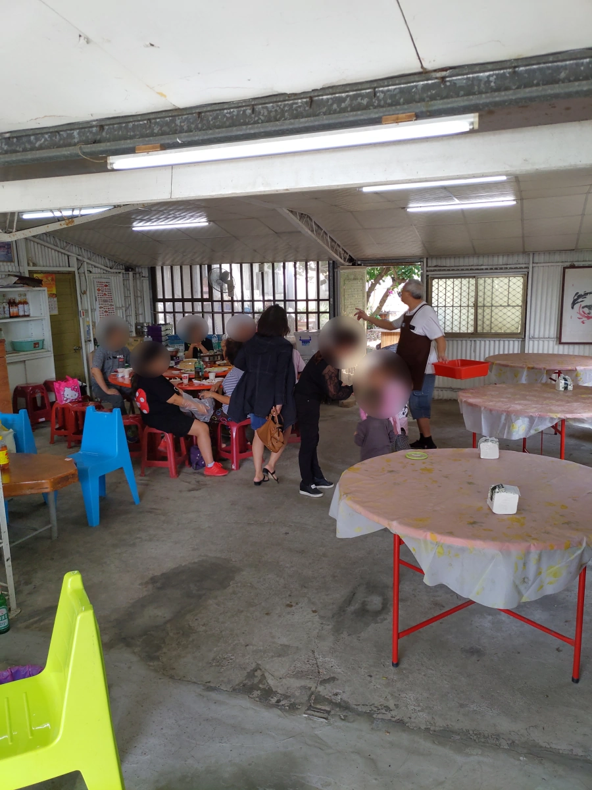
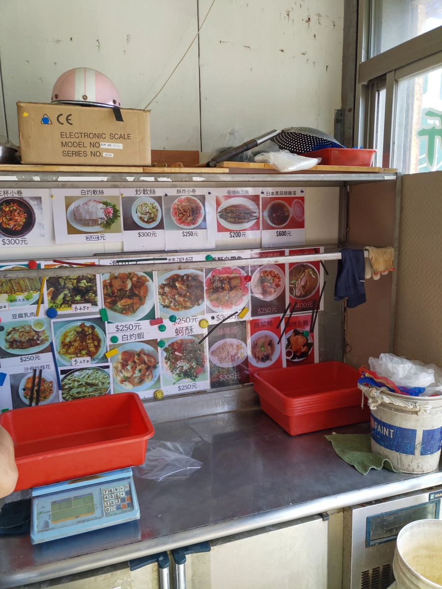
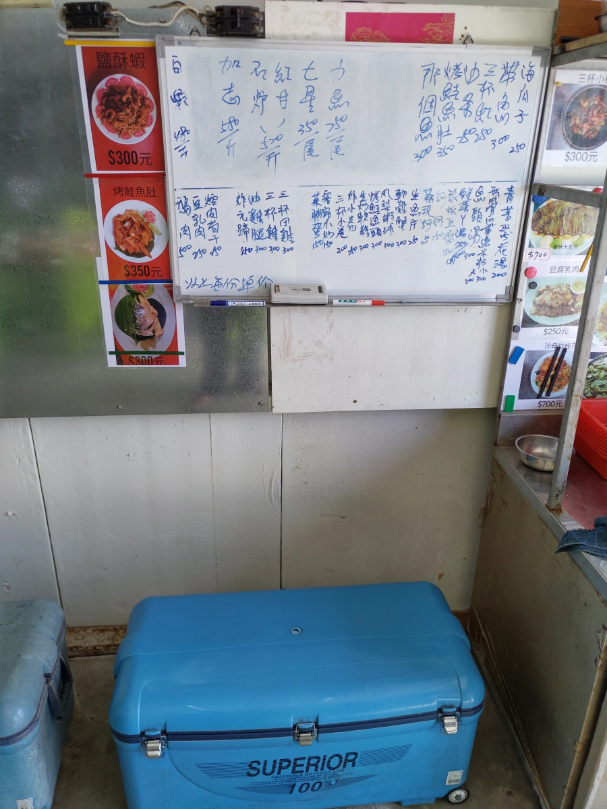
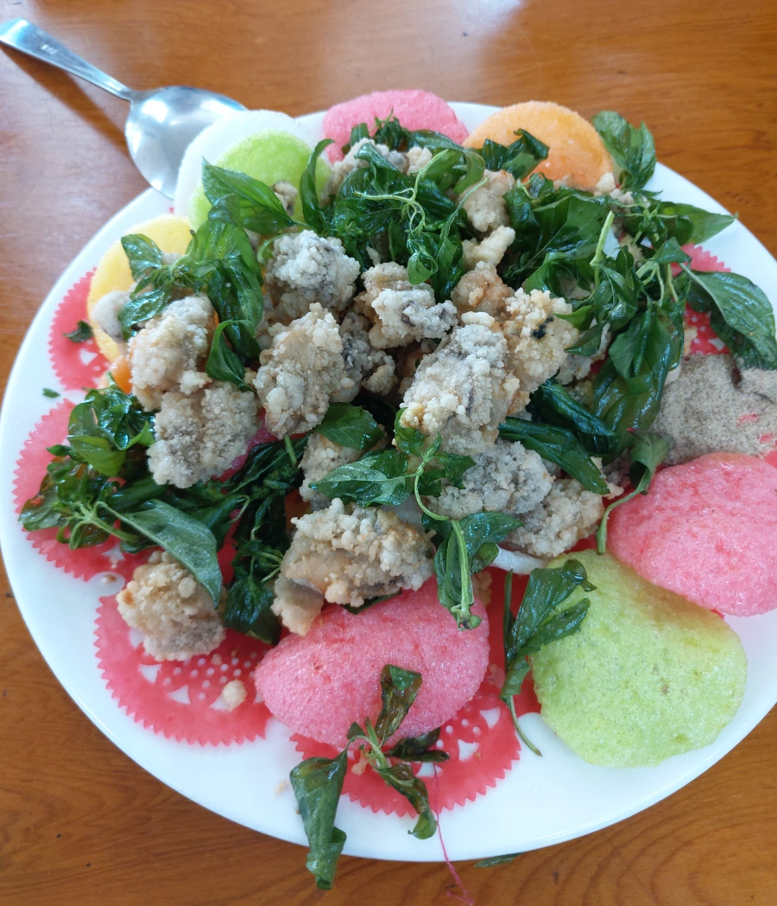
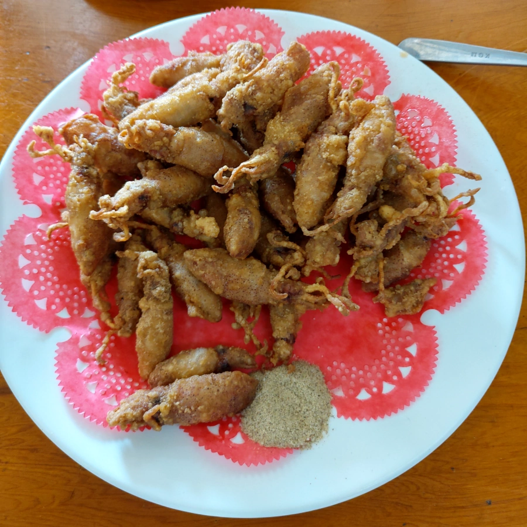
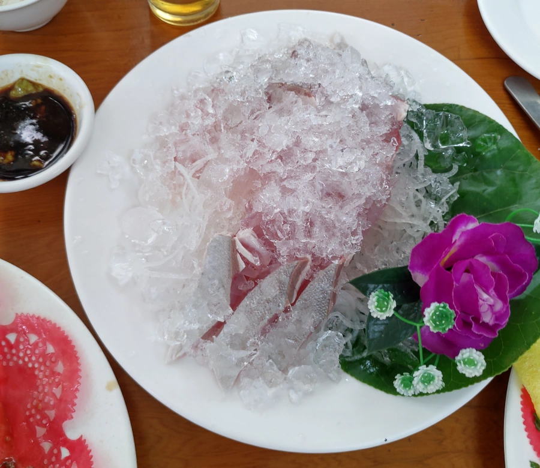
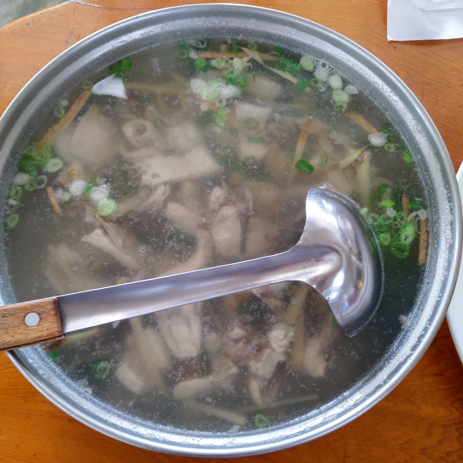
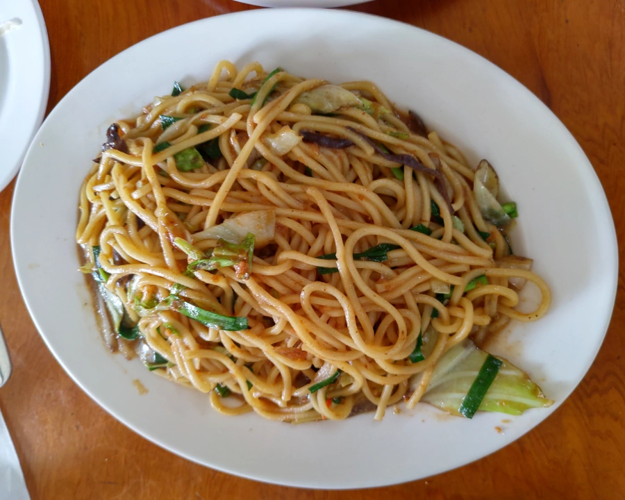

[新豐] 現流魚海鮮餐廳
| 餐廳名稱: | 現流魚海鮮餐廳 |
|---|---|
| 地 址: | 新竹縣新豐鄉新豐村14鄰346號 |
| 營業時間: | 週四至週二 10:00-19:00 |
| 週三 公休 | |
| 電話 : | 0975 345 723 |
今天從平時收集的 疑似美食名單 挑一間海鮮餐廳來踩雷 - 位於新豐鄉紅毛港的 現流魚海鮮餐廳。今天吃完的感覺是，菜色還行，份量比一般大， 算起來 CP值挺好的，比風景區那些餐廳強多了。只是 環境是完全沒裝潢，吃飯氣氛 跟 當時的客人很有關，客人吵雜，氣氛就差，客人安靜吃飯，氣氛就還可以。 
鐵皮屋、水泥地，毫無裝潢可言，桌椅也很普通，不過我比較重視好吃不好吃，這樣的環境還能接受，老闆還宣稱夏天有冷氣。下圖白頭髮的就是老闆。
今天用餐的前半段，這桌客人似乎是在地的親友們聚餐，大人高興地大嗓門聊天，小朋友放任他們跑來跑去嬉鬧，氣氛超級差的。 更糟的是，有人抽菸，可能是後門出去的樹蔭下，不知道是哪桌的，後院也有露天座位。可是後門沒關啊，走出後門就抽菸，煙味還不就飄進來，煩死了。
所幸用餐後半段，客人都吃飽離去，只剩後院還有一些客人，也沒煙味了，總算能悠閒地享用海鮮了。之後有再來幾組客人，大都是三、四人，自然是不會像十幾個人這樣大聲喧嘩。 
鄉下海鮮店，菜單就牆壁上這種，但是也只是參考用，直接看魚貨點，最準確。 
第二面菜單牆，仍然是參考用。像 炒海瓜子 已經賣完了。所有海鮮食材，都在下面兩個大冰櫃。老闆似乎有些門路，這些魚貨都是海釣的。餐廳名字就是標榜 現流魚。 
店家餐具、白飯是自助式的，在後門的附近。白飯不算錢，免費供應。第一次來訪不知道，老闆、服務生又通常很忙，開始時客人多，不好意思到處看，吃到一半才發現。
炸蚵酥。很標準，跟一般餐廳差不多。 
炸小卷。外面比較少見，一樣是配胡椒鹽，還不錯。跟炸蚵酥有點類似，可是沒辦法，之前做功課時，有人說這道好吃。 
小朋友愛吃生魚片，老闆就推薦紅甘 一魚兩吃 - 切生魚片，剩下煮魚湯。 紅甘生魚片感覺有用熱水燙魚皮的部分，是一般餐廳常見的 湯霜法 手法，這是加速魚肉的熟成，讓生魚片更好吃。 這盤生魚片，撒了大量碎冰鎮住，還蠻鮮甜的。 
紅甘魚湯 好的是感覺不到魚腥味，不過酒味就稍微濃一點，店家大概是用酒去腥味吧。只是魚湯的魚肉，都是切生魚片剩的，有一些魚骨頭、魚刺，吃起來有點累。 老闆炫耀說今天進了五尾紅甘，已經賣出四尾了。 
炒麵，網路上有人推薦，不過吃起來還好，很正常。

老闆、老闆娘的理念就是不重裝潢，將實在的好吃海鮮，呈現給客人。現流魚海鮮餐廳差不多就是這樣子，我是認同也接受這樣的理念。 不過我覺得好吃度 沒有到 基隆安一五郎 的水準，那就不大值得忍受這樣的環境，特別是還有人抽菸的話，那就完全不能忍。 如果各位到紅毛港玩，其實是可以順便來用餐，專程前來就大可不必了。